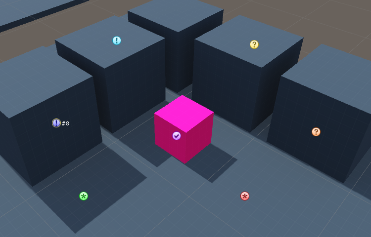
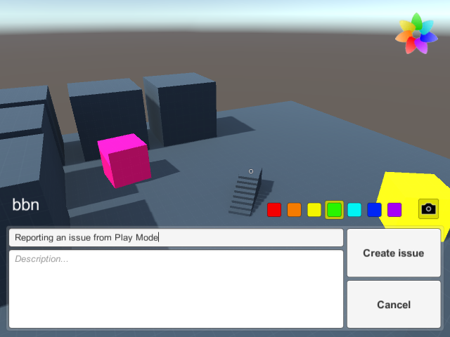
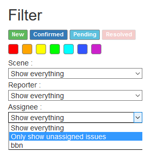

Navigation
User guide
This page will present you the features of MwIssues and how to use them. If you want to learn how to install MwIssues into your project, you should read Server setup guide and Client setup guide pages instead.
Issues
Issues are composed of a few fields that are listed below.
Title: Very short description that will be easily visible to everyone.
Description: A more detailed description of the issue.
State:
- New (Star)
- Confirmed (Exclamation mark)
- Pending (Question mark)
- Resolved (Check mark)
Category:
Categories have no meaning other than the one your team gives them.
For example, you could say that Red, Orange and Yellow are High, Medium and Low priority, respectively, or you could say that Blue issues are level design issues.
- Red
- Orange
- Yellow
- Green
- Cyan
- Blue
- Purple
Reporter: The username of whom created this issue.
Assignee: The username of whom is enthrusted to resolve this issue.
User settings
When you first launch a project using MwIssues, you should make sure it is configured properly.
First of all, you can access the Issue Manager from Unity's menu bar:
Window > Issue Manager
This Issue Manager is used for almost everything related to issues. If you ever close it, you can always re-open it from the menu bar.
Now, we want to open the configuration file. You can just press the Config button in the Issue Manager and it will be selected and opened into the Inspector window.

Assets/MwIssues/Config.asset
The configuration file contains two categories.
- Project settings: This part should already be filled.
- User settings: This is the part we want to edit.
- Username: Your personal identifier.
- API Key: Your (or your team's) security key.
By default, users without a key are only allowed to read issues, but are not allowed to create or edit them.
Please make sure you keep your key private.
When you are done, press the
Reload button before going back to the Issue Manager to make sure your new settings are used.On the Issue Manager, press
Connect to connect to the server.
User interface
Issue list
Control buttons
- Refresh list from server: Download the latest list of issues from the server.
- Create new issue: See TODO Creating new issues TODO.
Issue list filters
- Show issues in scene: Check this box to display active scene's issues in Unity's scene view.
- Listed issues: Select the issue states that you want to see.
- Listed categories: Select the issue categories that you want to see.
- Only show issues from active scene: Issues from other scenes are hidden.
- Only show issues assigned to me: Issues are only visible if the
Assigneefield match your username.
Issue list
This list shows the icon, the identifier and the title of each issue that match the filters. Click on an issue in the list to select it.
Issues in scene
If you checked Show issues in scene, the issues will be displayed in your scene view. Otherwise, only the selected issue will be visible. Click on a visible issue to select it.
Creating new issues
When you click the Create new issue button, you will be prompted to click on the scene view to select where your issue will be located. Please note that you can only use the Scene view and not the Game view.
You can now fill your new issue's title with an optional description, and select it's state and category.
- Reporter: Your username, since you are the one creating the issue.
- Assignee: User assigned to the issue. Press
Meto assign it to yourself. - Show issue in scene: Focus the Scene view on this issue.
- Move camera to report position: Move the Scene view camera to the position it was in when the issue was created.
- Preview screenshot: A screenshot is taken when you create an issue. Click this button to preview it.
- Upload scene screenshot: Check this box to attach the screenshot with the issue. If you don't check this button the issue will not have a screenshot attached.
- Create issue: Click this button to confirm the creation of the issue.
Viewing and editing issues
Select an issue to view the details and edit it.
The issue edition screen is very similar to the issue creation screen. You can change the title, the description, the category and the state of the issue from this screen.- Reporter: User who reported this issue.
- Assignee: User assigned to the issue. Press
Meto assign it to yourself. - Show issue in scene: Focus the Scene view on this issue.
- Move camera to report position: Move the Scene view camera to the position it was in when the issue was created.
- Preview screenshot: Click this button to download and view a screenshot.
- Update issue: Click this button to confirm your modifications.
- Delete issue: Click this button to delete this issue. Please note that you should only delete invalid issues. When you fix an issue, you should change it's state to
Closedinstead.
Scene view
If you have checked Show issue in scene, you can view and select issues directly in the Scene view.

Screenshot viewer
Press the View screenshot button on your issue to view the attached screenshot.
Click anywhere in the viewer to toggle between real image size and image scaled to fit in the window.
Reporter
The Reporter prefab is a tool that can be integrated in development build of your game, allowing developers and play-testers to quickly report issues without leaving the game application.
For a setup guide, please consult the Client setup page.

You can access the reporter in-game by either pressing a key (F11 by default), or by clicking on the MwIssues logo, which should be on the top left of the screen.
To locate the issue, you can either put your mouse cursor over the issue (when pressing the report key) or click on the screen after pressing the MwIssues logo, a small cursor will appear to show you where your issue is located.
If you don't like the position, you can press the report key or click on the logo again to update it without leaving the reporter.
The only required field in the reporter is the Title. To quickly report an issue, you can just enter a short title and press the Send issue button to validate.
Optionally you can also enter a longer description in the Description field.
When starting a report, a screenshot is taken. If you want a screenshot to be attached to the issue, check the camera icon above the reporter.
This option can be enforced, in that case the camera icon won't appear.
You can also select the issue category by selecting one of the seven colors above the reporter.
This option can also be enforced, in that case the category selection won't appear.
If you want to cancel your report, press the Cancel button.
Web issue list
You can access the issue list by accessing the server address directly in your internet navigator. You need to specify the port in the URL.
http://server-address:port/ Example for local server: http://localhost:3000/
Autentication form
When you get on the page, you will see an authentication form prompting you for your User name and API Key.
You can also choose to check the Remember my credentials checkbox if you don't want to enter your credentials every time.
Please note that your credentials are saved unencrypted, so only use this option if you are on your own computer.
You can also access the issue list anonymously if the server settings allows it.
Filters
When viewing the issue list, you can use the filters to control which issues are shown.

Click on a state or a category (color) to toggle it. You can also double-click a state or a category to enable exclusively this state or category.You can also filter the issues by Scene, Reporter or Assignee. The special option Only show unassigned issues can be found in the Assignee filter.